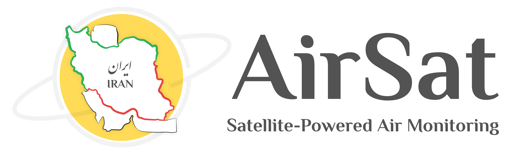

AirSat — Satellite-based air pollution monitoring for Iran
AirSat is a dynamic satellite-based air pollution monitoring system for Iran, built on Sentinel-5P (Level-3, OFFL) data from 2018 onwards. For a user-selected time window, it computes temporal means and visualizes them as maps and charts.
ایرسات — پایش ماهوارهای آلودگی هوا برای ایران
ایرسات یک سامانه پویا برای پایش آلودگی هوا در ایران است که بر پایه دادههای Sentinel-5P (Level-3, OFFL) از سال ۲۰۱۸ به بعد توسعه یافته. در بازه زمانی انتخابی کاربر، میانگین زمانی را محاسبه کرده و بهصورت نقشهها و نمودارهای تعاملی نمایش میدهد.

Overview
Scope, pollutants, and what the system computes and visualizes.
Pollutants covered
NO₂, SO₂, CO, O₃, HCHO, CH₄, and UV Aerosol Index (Sentinel-5P).
Time-window means
Compute temporal means for selected windows (7d, 30d, last 3 months, year, or custom range).
Hotspots & province view
Hotspot maps for the whole country or each province separately.
Maps, charts, and downloads
Maps + charts plus direct downloads of GeoTIFF (raw) and PNG (color maps).
Data source
Sentinel-5P (Level-3, OFFL), 2018–present. Temporal averaging over user-selected windows.
Intended use
Designed for trends, hotspots, and relative comparisons—complementary to ground stations and models.
Features
Analysis modes, comparisons, and scientific notes about units and gaps.
Dynamic mean maps
7 days, 30 days, last 3 months, current year, or custom time range.
Provincial comparison
Bar chart comparison of provincial mean values over the selected period.
Time series & annual mode
For any province: mean per image or mean per year comparisons.
Downloads
Direct download of GeoTIFF (raw) and PNG (color maps) for analysis/reporting.
About units (important)
Why do some areas show data gaps (“holes”)?
Important note
Cite / Reference
Use the DOI for citations. The paper can be added later when published.
Zenodo DOI (Versioned)
Recommended citation for v1.0.0.
BibTeX (for LaTeX)
You can paste this in your .bib file.
About
AirSat is designed, developed, and implemented entirely by Vahid Attarbashian as part of a broader PhD research project. It is built on Sentinel-5P (Level-3, OFFL) data from 2018 onwards and focuses on national-scale monitoring, hotspot detection, provincial comparisons, and temporal analysis of atmospheric pollutants over Iran.
ایرسات بهصورت کامل توسط وحید عطارباشیان طراحی، توسعه و پیادهسازی شده و بخشی از پژوهش دکتری است. سامانه بر دادههای Sentinel-5P (Level-3, OFFL) از سال ۲۰۱۸ به بعد تکیه دارد و بر پایش ملی، شناسایی نقاط داغ، مقایسه استانی و تحلیلهای زمانی آلایندههای جوی ایران تمرکز میکند.